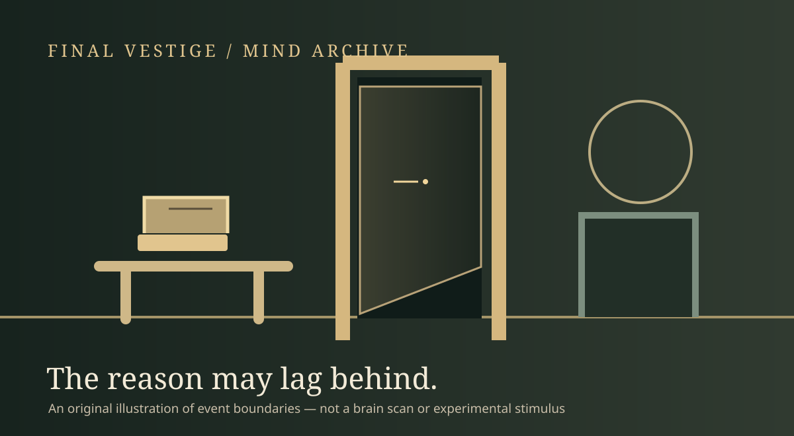

The question behind the offer
Did the doorway make you forget—or did your task change?
You cross from desk to kitchen, and the errand slips away. In Radvansky and Copeland's controlled 2006 virtual-room experiments, object information was less accessible after certain location shifts. Later tests extended the result to real rooms and examined competing explanations. These studies explain a question about event boundaries. They did not test meditation MP3s or demonstrate a shortcut to better memory. Original research · Further experiments.
A structured twelve-minute pause can be convenient without being scientifically miraculous. That is the useful question to bring to any meditation-audio purchase: does the format suit you, and are the results supported by evidence on the actual product?
Try a twelve-minute version that costs nothing
0–2 minutes: Choose an ordinary, low-stakes intention and write it on paper. 2–6 minutes: Work on one small step, noticing interruptions without trying to banish them. 6–10 minutes: Continue or stop, and observe how much structure the fixed duration provided. 10–12 minutes: Record what you did, what was distracting, and whether you'd use this routine again.
This is an original self-observation exercise, not a validated treatment, cognitive test or clinical intervention. If it gives you enough structure, you may not need to purchase anything.
Want seven days of printable exercises, a 30-day log and an independent audio-claim checklist? Use the free Seven Day Focus Fieldbook. It uses Final Vestige's existing Jetpack/Dispatch list; no new sign-up stack is created here.
What Zen12 Premium actually sells
The current public Zen12 seller page describes a progressive twelve-level meditation-audio library containing 48 MP3 recordings, with guided sessions, music, natural sounds and white noise across its levels. The same page advertises a quick-start guide, manual, support and other extras. These are seller-described inclusions; Final Vestige has not inspected a delivered library, personally used the recordings, or audited fulfillment.
The site advertises a one-year refund guarantee. This is a seller promise, not a verified successful refund or an independently checked contract for an affiliate checkout. Public price displays in earlier audits varied between a rounded amount and a cents amount. We withhold any price or discount from the presell recommendation until the exact authorized checkout, currency, tax and any upsells can be inspected. There is no scarcity claim and no promotional countdown here.
Audited merchant source addresses (non-clickable until partner authorization is verified): inspire3.com and zen12.com. Sales-page inclusion details checked 14 November 2026; referred checkout uninspected.
Convenience is not efficacy
The seller says its audio can produce an hour-like meditation effect in twelve minutes and promote relaxation, focus and other benefits. We have not identified sufficient independent, product-specific evidence to reproduce those promises. Research involving meditation training, attentional tasks, clinical hypnosis or brainwave recordings does not by itself validate Zen12 as sold. The original doorway study provides no such validation either.
To make a purchase decision, separate a product's plainly observable features (file count, duration, interface, listening options) from health or cognitive outcomes requiring appropriate substantiation. The FTC's health-claims guidance requires objective health-product marketing claims to be truthful and adequately supported. This guide does not promise anxiety relief, improved cognition or a faster-than-meditation effect.
Five buyer questions the seller cannot answer for us
- What if I only need a routine? Use the free exercise or fieldbook first. A schedule does not have to be purchased.
- Do I need 48 recordings? Consider whether you will actually use four styles across twelve levels instead of relying on one favorite track.
- What is the true delivered package? We have not tested download access, captions/transcripts or device compatibility. Request actual deliverables before paying.
- Will the advertised guarantee work? Examine the current transaction's refund terms and merchant support channel. We did not test a refund.
- Does the audio scientifically outperform free practice? No product-specific comparative outcome evidence was verified for that claim. Do not assume equivalence.
We do not claim personal product use, independent testing of audio efficacy or a customer outcome. This is a buyer-evidence guide, not a testimonial.
The decision, without pressure
Zen12 may be worth evaluating as a seller-described audio library if you specifically want a catalog of short, varied listening files and understand the difference between a format and a guaranteed outcome. If your main need is to get started, the free Fieldbook is a clearer first step. Neither choice requires believing an unsupported theory about your brain.
If and only if Final Vestige's named affiliate account is approved, its allowed channels and earning URL are verified, the exact offer and refund terms are checked and Site QA authorizes release, a merchant link could appear in the separate decision area. Until then, it stays disabled.
Sources & methods
Radvansky & Copeland (2006); Radvansky et al. (2011); Pettijohn & Radvansky (2016); FTC Endorsement Guides FAQ and Health Products Compliance Guidance. Seller content independently viewed at inspire3.com and zen12.com; its commercial claims are not research support.
Change Blindness investigation · Franklin & Mesmerism investigation · Puységur primary-source collection.
Draft for isolated source-control review; no published WordPress page or approved affiliate offer. No individual prices, earnings or outcomes claimed.
Variant B / optional visual explanation / concept only
A 42-second illustrated explanation

Original static poster. An encoded film has NOT been produced. No autoplay, network player, autoplay substitute or misleading play button. The complete concept is readable without JavaScript or media.
Read the full 42-second narration and caption plan
0–7 s: You crossed the doorway. The reason for coming with you did not seem to follow.
7–14 s: Laboratory studies found that a change of room can make a recently held object harder to recall.
14–21 s: That does not mean a door erases your memory. Your mind may be updating its current episode.
21–28 s: Try writing down one ordinary intention before a harmless room-to-room errand.
28–35 s: Compare what you remember and what may have distracted you. One trial proves nothing.
35–42 s: If a short routine is what you need, try the free one first. Evaluate any paid audio separately.
Corresponding source-controlled R381_ORIGINAL_CAPTIONS.vtt has six cues. Before release, film must be originally produced, captioned, tested, user-started, and served locally only if performance allows.